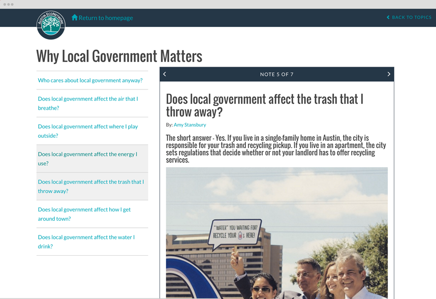
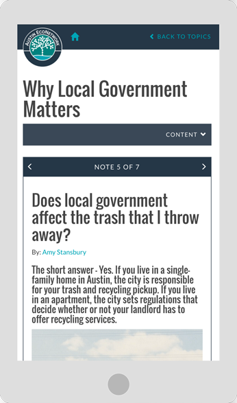

My work.
Austin EcoNetwork Notes



Problem
Austin EcoNetwork is an environmental news website for Austin. The organization wanted to give readers the background information and context they need to understand the news stories of the day in a conversational way.
Solution
I designed and developed a notecards application with questions and answers like studying cards learn the background story of a narrowly focused topic.
I created to be back-end agnostic. For this instance, the Austin EcoNetwork staff use their already existing Wordpress site admin dashboard to create and update notecards.